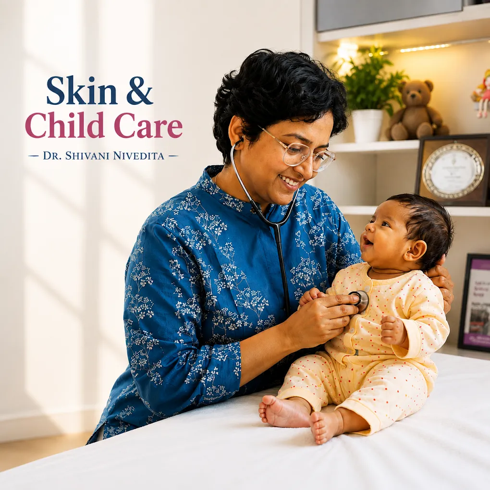

To be verified
Add the doctor's verified qualifications here.
Dr. Shivani Nivedita - Skin & Child Care Clinic.

Consultations are centered on understanding the concern, appropriate clinical assessment, clear guidance and follow-up support for skin, hair, scalp and child-care concerns.
Qualifications, registration and experience should be published only after clinic verification.
Add the doctor's verified qualifications here.
Add verified registration details here.
Add verified experience details here.